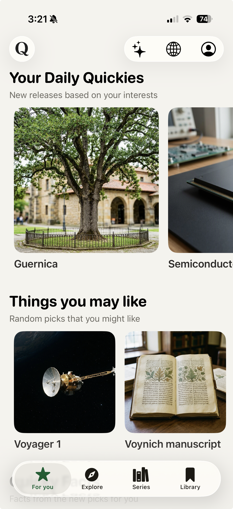
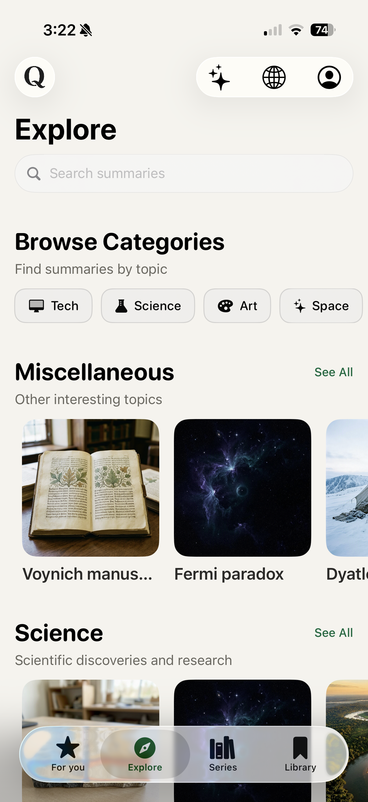
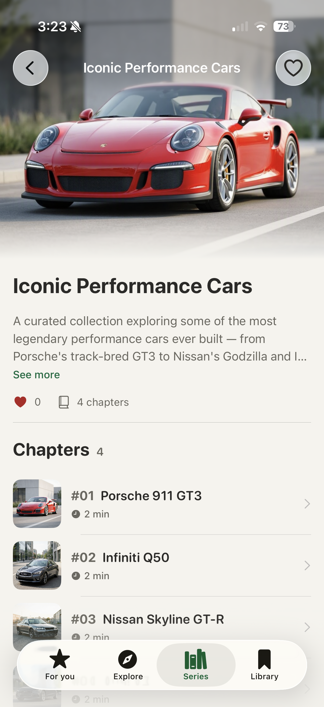
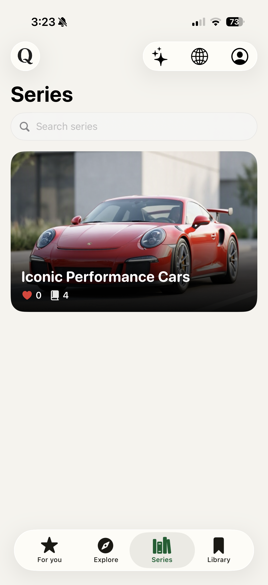

For You
Daily Quickies, picked for you
Fresh releases based on your interests land every morning — art, engineering, mysteries, history. A new reason to open the app daily.
Now on iOS & Android
Daily 5-minute reads, on-demand topic summaries, and curated learning series — distilled from thousands of sources into beautiful reads you'll actually finish.

What's inside
Everything on QuickyWiki is built around one promise: deep curiosity, shallow time commitment.
Fresh releases based on your interests land every morning — art, engineering, mysteries, history. A new reason to open the app daily.

Browse categories from Tech to Space, search any topic, and get a crisp summary on demand — no rabbit-hole tabs required.

Multi-part journeys through a theme — like Iconic Performance Cars, from the Porsche 911 GT3 to Nissan's Godzilla. Two minutes per chapter.

Every topic opens as a paged, magazine-grade read: key facts, jargon explained in place, your fonts, your theme. Don't take our word for it — try it below.
No download needed
This is the actual QuickyWiki reading experience — pages, themes, fonts, jargon and all. Swipe up, click the arrows, or use your keyboard.
The farthest thing we've ever made
Swipe up to start reading ↓
Launched on September 5, 1977, Voyager 1 has become the most distant human-made object, a radioed ambassador at the edge of the Sun's influence. As of March 2026 it sits about 172.59 AU — 25.8 billion km — from Earth, and is projected to be one full away in November 2026.
Its journey transformed from a planetary explorer into the first probe to cross the boundary between the Solar System and .
Voyager 1 exists because of a planetary coincidence. In the late 1970s, Jupiter, Saturn, Uranus and Neptune aligned in a way that happens once every 176 years — letting a single spacecraft hop between them using .
Each flyby flung the probe faster. By Saturn, Voyager 1 was travelling over 61,000 km/h — fast enough to escape the Sun's pull entirely, on a one-way trip with no brakes and no return ticket.
In August 2012, instruments registered something historic: the solar wind died away and surged. Voyager 1 had crossed the .
It became the first human object to sail beyond the Sun's protective bubble — a moment scientists had theorized about for half a century, confirmed by a 35-year-old machine with less memory than a car key.
Bolted to its side is a gold-plated copper disc: greetings in 55 languages, the sound of rain, whale song, Chuck Berry, Bach — a mixtape for anyone, or anything, that might find it.
Carl Sagan's team designed the cover with a pulsar map locating Earth, and electroplated a sample of so its decay could serve as a cosmic clock. The record's case should survive for over a billion years.
On Valentine's Day 1990, at Sagan's urging, engineers turned Voyager 1's camera homeward one last time. From 6 billion km away, Earth appeared as a single pale pixel suspended in a sunbeam.
“Look again at that dot. That's here. That's home. That's us.”— Carl Sagan
It remains the most distant portrait of Earth ever taken — and the reason the camera was shut down forever afterwards, to save power.
Daily picks, curated series, jargon decoded — all in your pocket.
Get QuickyWiki freeThemes, fonts and jargon tooltips — exactly as they work in the app.
The daily digest
Guernica · Semiconductors — picked from your interests.
“Fermi paradox” — 5 minutes, 9 facts, zero doomscrolling.
Iconic Performance Cars · Nissan Skyline GT-R. Midnight theme on.

Questions, answered
A reading app that distills encyclopedic knowledge into beautiful 5-minute summaries — with daily digests, on-demand topics, and curated multi-chapter series.
Curious people with full calendars: commuters, students, lifelong learners — anyone who loves knowing things more than scrolling things.
Wikipedia is a reference; QuickyWiki is a reading experience. We distill, structure and design each topic into a paged read with key facts and jargon explained inline — finished in five minutes, remembered for longer.
You get a 3-day free trial with full access. After that, a simple subscription keeps the daily digests and series coming.
QuickyWiki is available on both iOS and Android, with your library and progress synced.
Absolutely. Pick your interests for the daily digest, search any topic on demand, and follow series that match your curiosity.